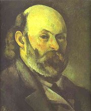
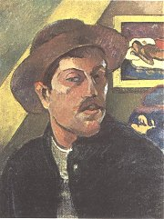

Renoir: Houpačka

Degas: Zkouška baletu
Monet: Nádraží Saint Lazare v Paříži

Monet: Pohoří l'Esterel
|
IMPRESIONISMUS
Impresionismus se nejdříve prosadil ve výtvarném umění. Původně hanlivé označení mělo vyjadřovat, že francouzští malíři, kteří vystavili své obrazy na Salonu odmítnutých (1874), jsou nanejvýš „dojmisté“... Moderní umělci se skutečně soustředili na evokování prchavých dojmů (impresí). Malovali základními barvami, které se měly „smíchat“ až na sítnici divákova oka. Dojem prchavosti navozovaly barevné skvrny. Jako by se vše odráželo na vodní hladině a neustále se proměňovalo. Obrazy postrádají linie a obrysy předmětů jsou neurčité. Zářivá barevnost neodpovídá skutečnosti, ale náměty zůstávají realistické. Impresionisté vycházeli do plenéru a malovali přírodu, stromy, pole, zahrady nebo obyčejné lidi.
Claude Monet [klód mone] proslul jako autor cyklů Kupky sena nebo Průčelí katedrály v Rouenu, jeho obraz Imprese, východ slunce dal jméno celému směru. Camille Pissarro zachytil bohémskou čtvrť Montmartre, Edgar Degas [dega] maloval hlavně baletky nebo koňské dostihy, Auguste Renoir [ogist renoár] se soustředil na lidské postavy a Alfred Sisley [sisle] byl vynikajícím krajinářem. V Čechách měli k impresionismu blízko malíři Antonín Slavíček, Antonín Hudeček nebo Otakar Nejedlý.
Hudební impresionismus reprezentují francouzští skladatelé Claude Debussy [klód debisi], autor Preludia k Faunovu odpoledni nebo skladby Moře, a Maurice Ravel, který napsal slavné Bolero, z Čechů pak Vítězslav Novák a Josef Suk.
Vzorem pro impresionistické spisovatele byl Verlainův zvukomalebný verš. Jejich tvorba se vyznačuje líčením přírody, přemírou barev, pocitů a prchavých dojmů. Z českých autorů prošel impresionistickým obdobím Sova, Mrštík nebo Šrámek. Impresionismus ovlivnil i literární kritiku.
Monet: Imprese, východ slunce
|

Sisley: Bristolský průliv večer
Pissarro: Bulvár Montmartre v noci
Monet: Průčelí katedrály v Rouenu
Který z obrazů se ti líbí nejvíce? Proč? Napiš k němu krátký příběh.
|
Antonín Sova (1864-1928)
Český básník Sova se narodil v Pacově, kde také zemřel. Pracoval jako úředník v kanceláři Ottova slovníku naučného a na pražském magistrátu, později se stal knihovníkem.
|
Sovova poezie
Pod vlivem Macharovy koncepce realistické poezie napsal Sova knihu Realistické sloky. Vrcholem jeho tvorby jsou impresionistické básnické sbírky Květy intimních nálad a Z mého kraje. K symbolismu mají blízko Sovovy knihy Údolí Nového Království, Zlomená duše, Vybouřené smutky a Dobrodružství odvahy. Milostnou a přírodní lyriku zahrnul do sbírek Ještě jednou se vrátíme a Lyrika lásky a života.
|
Slavíček: Procházka ve Hvězdě
Které barvy se objevují v Sovových básních?
Objevíš v jeho poezii další rysy impresionismu?
|
Vilém Mrštík (1863-1912)
Vilém Mrštík se narodili v Jimramově. Spáchal sebevraždu u bratra Aloise v Divácích u Hustopečí, kam se na sklonku života uchýlil. Společně vydávali časopis Moravskoslezská revue, napsali románovou kroniku Rok na vsi a tragédii Maryša. Vilém Mrštík napsal romány Pohádka máje nebo Santa Lucia, román Zumři už nedokončil. Podepsal manifest České moderny.
|
Vilém Mrštík: Pohádka máje
Děj Mrštíkova románu Pohádka máje se odehrává v Ostrovačicích u Brna a Praze kolem roku „187*“. Hlavní postavou je student práv Richard Gregor, který žije zahálčivým životem pražského flamendra. Při návratu do rodného kraje se Ríša zamiluje do Helenky, dcery revírníka. Získá si její lásku, napraví se a vše vyústí ve šťastný pohádkový konec – svatbu.
Román vycházel původně časopisecky. Pro knižní verzi ho Mrštík zásadně přepracoval. Oslabil impresionistické prvky a ironické vyznění a zdůraznil secesní zdobnost a idyličnost.
|

Slavíček: Ve veltruském parku
Charakterizuj Ríšu a Helenku.
Najdi v ukázce impresionistické prvky.
Zaujal tě Mrtíkův román? Proč?
|

Seurat: Cirkus

Toulouse-Lautrec: Divan Japonais
|
POSTIMPRESIONISMUS
Všichni postimpresionisté prošli impresionistickým obdobím, ale brzy se každý z nich vydal jinou cestou. George Seurat [džordž sera] a Paul Signac [pol siňak] malovali místo barevných skvrn drobné tečky, tento styl se někdy nazývá pointilismus nebo divizionismus. Vincent van Gogh [finsent fan choch] se soustředil na výraz, proto je považován za předchůdce expresionismu, nanášel na plátno drobné barevné čárky, někdy i přímo z tuby. Paul Cézanne [pol sezan] používal při malování špachtli a hledal ve skutečnosti základní geometrické tvary, později na něj navázali kubisté. Paul Gauguin [pol gogen] směřoval k abstraktní plošnosti a symbolismu, slavné jsou jeho obrazy domorodých obyvatel Tahiti. Henri de Toulouse-Lautrec [anri de tuluz lotrek] maloval plakáty a měl velmi blízko k secesnímu stylu. Společně vystavili své obrazy na Salonu Nezávislých (1884).
Gauguin: Tahiťanky
|
Cézanne: Hora Sainte-Victoire

Gogh: Kostel v Auvers
Který postimpresionista tě nejvíce oslovil? Čím?
|
Vincent van Gogh (1853-1891)
Gogh: Autoportrét

Gogh: Pšeničné pole s cypřiši
Gogh: Hvězdnatá noc
|
Irving Stone: Žízeň po životě
V životopisném románu Žízeň po životě líčí Irving Stone osudy nizozemského umělce Vincenta van Gogha. Tento malíř se nikdy nedočkal uznání. Působil jako duchovní v hornickém kraji, ale byl ze svého místa odvolán, protože veškerý majetek rozdal chudým lidem. Sužovala ho duševní choroba, která se naplno projevila v Arles, kde si v pominutí smyslů uřízl část ucha. Zbytek života strávil v léčebně. Goghovy obrazy nikdo nekupoval, ale finančně ho podporoval bratr Theo, který věřil v jeho genialitu.
Goghova korespondence
O názorech Vincenta van Gogha, jeho vnitřním nasazení, pochybách i osudech podávají autentické svědectví malířovy dopisy, které mají rovněž značné literární kvality.
|
Irving Stone (1903-1989)
Americký literát Tenenbaum [tenenbom] psal pod pseudonymem Irving Stone [érving stoun]. Je autorem biografického románu Žízeň po životě. Známé jsou rovněž jeho romány o spisovateli Londonovi – Námořník na koni, sochaři Michelangelovi – Agónie a extáze nebo archeologu Schliemannovi Řecký poklad.
Srovnej Goghovo chování s Gauguinovým.
Který moment z Goghova života líčí ukázka?
Co si myslíš o Goghovi? Z čeho vychází tvůj názor?
Jaká je dnes cena Goghových obrazů? Proč?

Gogh: Slunečnice
Jaké byly Goghovy názory na umění? Co nového ses o tomto malíři dozvěděl/a?
|
Paul Cézanne (1839-1906)

Cézanne: Zátiší s jablky a pomeranči
Cézanne: Koupání
|
Henri Perruchot: Cézannův život
Také Cézanne nebyl příliš úspěšným malířem. Přestože jeho dílo neuznávali ani kritikové, kteří dokázali ocenit tvorbu impresionistů, dál pokračoval ve své cestě, protože byl přesvědčen o tom, že se vydal správným směrem. Jeho přítel Zola vylíčil Cézannovy osudy ve svém románu Dílo. Přestože se hlavní postava jmenovala jinak, Cézanne se v příběhu o zkrachovalém malíři poznal a přátelství mezi oběma umělci dostalo vážné trhliny. Perruchot chtěl ve svém životopisném románu postupovat co nejrealističtěji a snažil se Cézannův život zmapovat do nejmenších detailů.
|
Henri Perruchot (1917-1967)
Francouzský autor životopisných románů Henri Perruchot [anri perišo] zpracoval beletristické biografie malířů Maneta, Gogha, Cézanna, Gauguina a Toulouse-Lautreka.

Cézanne: Autoportrét
|
Paul Gauguin (1848-1903)

Gauguin: Autoportrét
Ve které zemi bys chtěl/a strávit dva roky? Proč?
|
Paul Gauguin: Noa-noa
Gauguin strávil dětství v Peru a v 17 letech se stal námořníkem, pak mu strýc zajistil místo burzovního makléře. To ale opustil, protože se rozhodl pro dráhu malíře. Za poslední peníze odplul na Tahiti, kde našel podle vlastních slov ráj na zemi. Dva roky zde maloval domorodé obyvatele. Svoje dojmy a vzpomínky zachytil v knihách Noa-noa a Před a po.
|

Gauguin: Žlutý Kristus
Která Gauguinova myšlenka tě zaujala nejvíce?
Jak na tebe působí tahitský text? O čem může být? Zkuz si ho zazpívat.
|
Internetové stránky
Monet, impresionista
Renoir, impresionista
Pissaro, impresionista
Degas, impresionista
Cézanne, postimpresionista
Gogh, postimpresionista
Gauguin, postimpresionista
Toulouse-Lautrec
Seurat, pointilista
Vilém Mrštík
Exkurze
Monet, muzea
Musee Marmottan Monet
Orangerie, Monetovo muzeum v Paříži
Ostrovačice u Brna

Nejedlý: Sněžení na kluzišti
|
Doporučená četba
Crespelle, Jean-Paul: Monet, Fortuna print, Bratislava 1992
Danielsson, Bengt: Gauguin na Tahiti a Marjézách, přel. V.Binar, Vyšehrad, Praha 1983
Drnák, Vladimír: Hlavou proti zdi, Melantrich, Praha 1969 (román o Goghovi)
Gauguin, Paul: Noa-noa, Před a po, dopisy, přel. Hlaváček, Malá, SNKLHU, Praha 1956
Gogh, Vincent van: Dopisy, přel. J.Masák, SNKLHU, Praha 1959
Impresionismus, Slovart, Bratislava 2003
Karlíková, Ludmila: Antonín Hudeček, Odeon, Praha 1983
Lecaldano, Paolo: Vincent van Gogh: Souborné malířské dílo (2 svazky), přel. Halasovi, Odeon, Praha 1986
Mrštík, Vilém: Pohádka máje, Československý spisovatel, Praha 1985
Perruchot, Henri: Život Vincenta van Gogha, přel. F.Zvěřina, Orbis, Praha 1969
Pytlík, Radko: Vilém Mrštík, Praha 1989
Renoir, Jean: Renoir, přel. V.Smetanová, Odeon, Praha 1968
Sova, Antonín: Dobrodružství odvahy a jiné básně, SNKLU, Praha 1961
Sova, A.: Když ona přišla na můj sad, Československý spisovatel, Praha 1987
Sova, A.: Prodloužený úžas, Odeon, Praha 1989
Stone, Irving: Žízeň po životě, přel. J.Emmerová, Melantrich, Praha 1985 (román o Goghovi)
Sweetman, David: Paul Gauguin, přel. V.Viták, BB art, Praha 2001
Zika, J., Brabec, J.: Antonín Sova, Československý spisovatel, Praha 1953
|
Vypracuj písemný referát o některé z uvedených knih.
Signac: Pinie, St. Tropez
Cézanne: Mladík v červené vestě
|
|